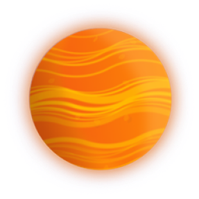

Космос
нас ждет!
нас ждет!



Земля
Земля является третьей по удаленности от Солнца планетой. Из всех известных науке планет только на Земле имеются кислородосодержащая атмосфера, обширные водные океаны, а также самое главное — биологическая жизнь.
Интересно, что по своим размерам Земля занимает 5-ое место среди остальных планет нашей солнечной системы, уступая таким газовым гигантам как юпитер, Сатурн, уран и Нептун.
Интересно, что по своим размерам Земля занимает 5-ое место среди остальных планет нашей солнечной системы, уступая таким газовым гигантам как юпитер, Сатурн, уран и Нептун.